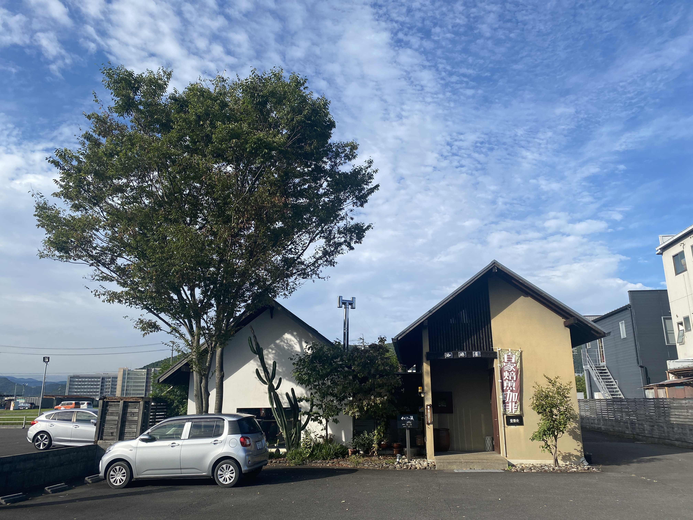
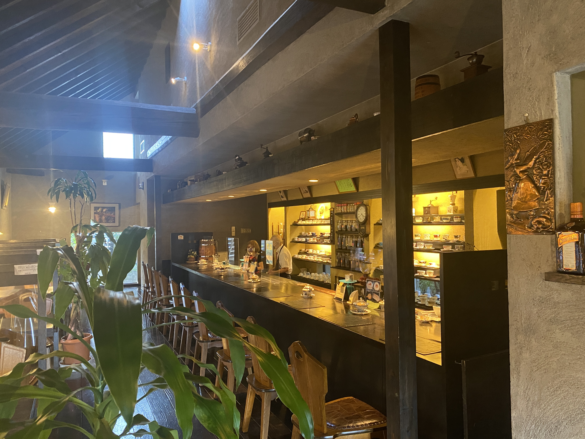
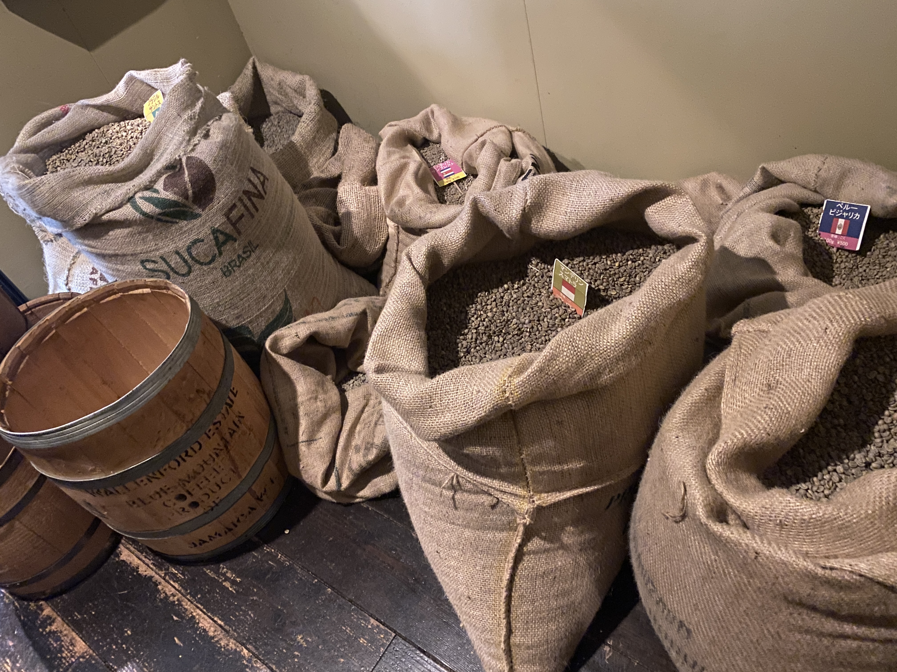
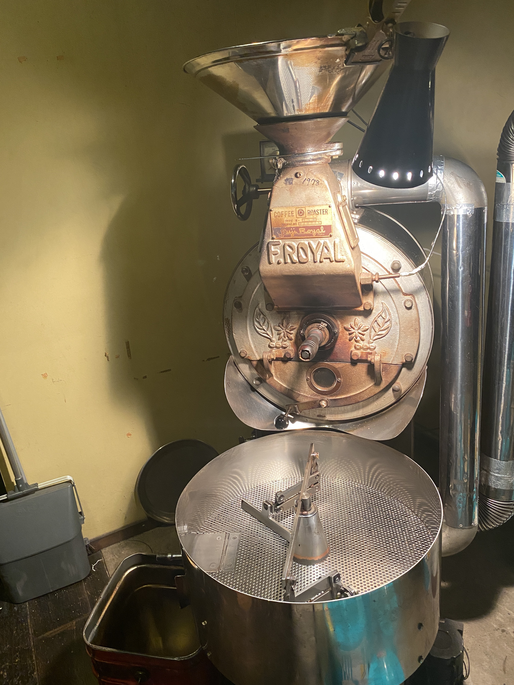
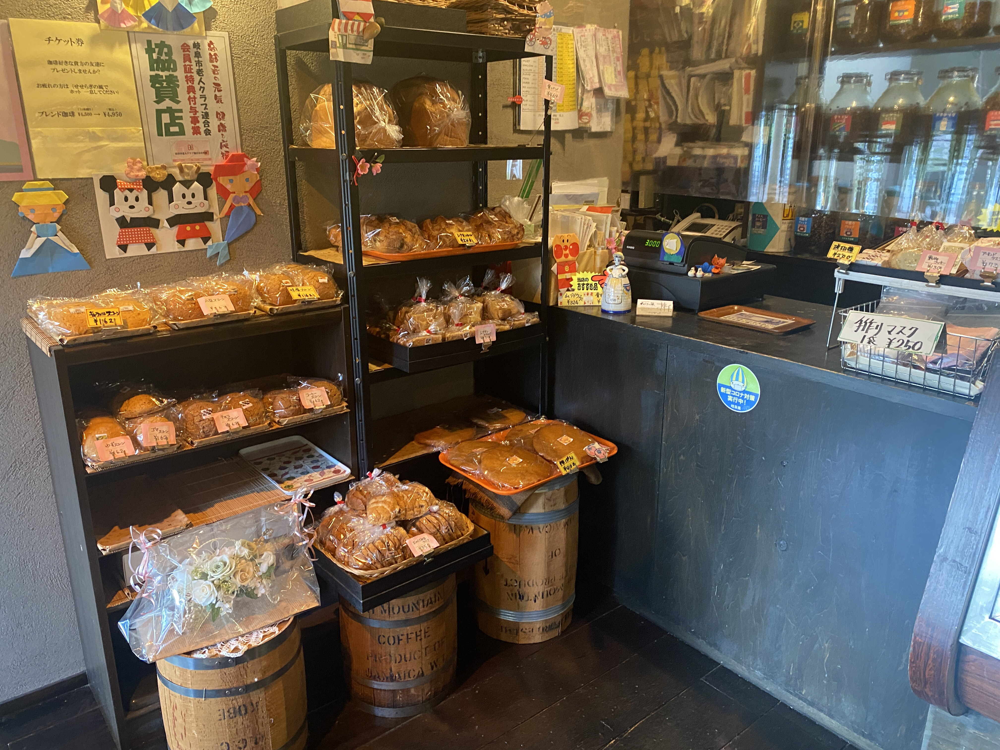

自家焙煎珈琲専門店
せせらぎの風
1978年から同じ焙煎機で焙煎しています。世界13か国の豆、ストレート13種。
- 営業時間
- 9:00〜19:00
- 定休日
- 第1・第3水曜日
- 駐車場
- あり
1978年に開業
13か国の豆 ・ ストレート13種
4種のブレンド（焙煎度別）
器は約100種
店の記録

1978年開業
日本の小民家を思わせる店内に、カウンター席とボックス席があります。世界13か国の珈琲豆を取り寄せ、設立当初から使い続けている焙煎機で、焙煎機専用の部屋で焙煎しています。
ドリンクのほかに自家製パンと手作りケーキがあり、店内に販売棚があります。初めての方は、まず下のメニュー台帳で全品の価格を確認できます。
- 食べログ 評価3.04 ・ 口コミ8件 ― 食べログで見る
- 喫煙は分煙です
-
01

生豆の麻袋と産地の札（店舗公式サイト掲載写真） 世界13か国の豆
取り寄せている豆は世界13か国分です。店内ではストレートコーヒー13種と、焙煎度の違うブレンド4種（深煎り・中深煎り・中煎り・浅煎り）を出しています。全品の価格はメニュー台帳に掲載しています。
-
02

焙煎機。設立当初から使用（店舗公式サイト掲載写真） 設立当初からの焙煎機
焙煎は焙煎機専用の部屋で行っています。使っている焙煎機は設立当初からのものです。写真は店舗公式サイトに掲載されている実機です。
-
03
カウンター奥の器の棚（店舗公式サイト掲載写真） 約100種類の器から選ぶ
器は約100種類を用意しています。来店した方のイメージから器を選び、一杯ずつ淹れます。器の棚は店内カウンターの奥にあります。
-
04

自家製パンの販売棚（店舗公式サイト掲載写真） 自家製パンと手作りケーキ
ドリンクのほかに、自家製パンと手作りケーキがあります。パンは店内の販売棚に並んでいます。品目と価格は日によって変わるため、店頭でご確認ください。
営業時間
| 営業時間 | 9:00〜19:00 |
|---|---|
| 定休日 | 第1・第3水曜日 |
営業時間・定休日は変更となる場合があります。ご来店前にお電話でご確認ください。
場所
| 住所 | 〒501-1123 岐阜県岐阜市古市場高田5-1 |
|---|---|
| 電話 | 058-239-6634（TEL/FAX兼用） |
| 駐車場 | あり |
| 喫煙 | 分煙 |
食べログ 評価3.04（口コミ8件） ― 食べログで口コミを見る
よくある質問
はい、駐車場があります。詳しい場所や台数についてはお電話でお問い合わせください。
第1・第3水曜日です。営業時間は9:00〜19:00です。変更となる場合がありますので、ご来店前にお電話でご確認ください。
世界13か国の珈琲豆を取り寄せています。ストレートコーヒーは13種、ブレンドは深煎り・中深煎り・中煎り・浅煎りの4種です。
店内に自家製パンの販売棚があります。持ち帰りの可否や品目、価格は店頭でご確認ください。
お支払い方法はお電話でお問い合わせください。
分煙です。
このページは制作サンプル（デモ）です。掲載している写真は、御店の公式サイトに掲載されている写真です。気になるところがあればお知らせください。その内容で修正して、正式なサイトとして納品します。